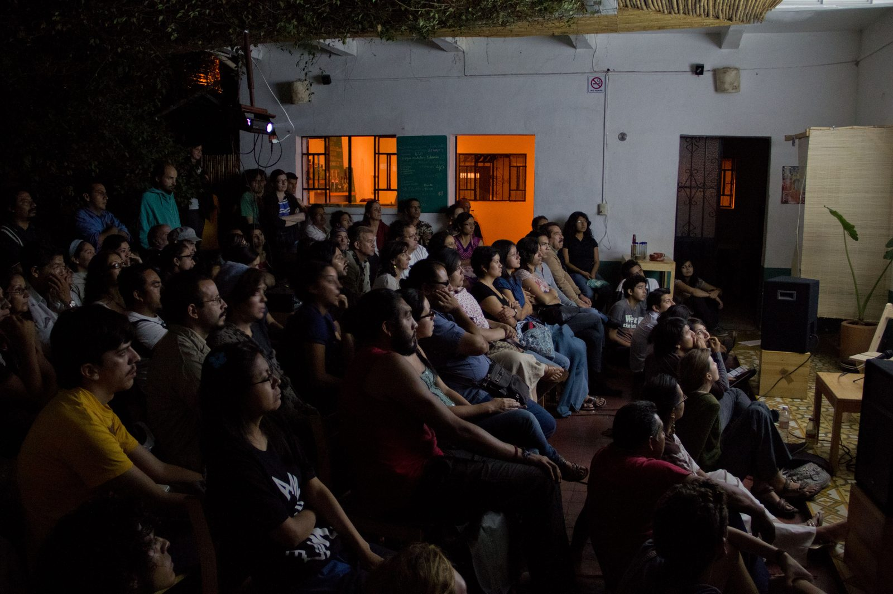

Festivals · Film
Ambulante Gira de Documentales 2027
- Dates
- –
- Location
- Mexico City, Mexico
- Format
- In-person
- Category
- Film
- Industry
- Documentary film
- Organiser
- Ambulante
- Official website
- https://ambulante.org/blog/conoce-los-primeros-detalles-de-la-gira-de-documentales-2027
About
22nd edition, touring: Sonora 18-25 Feb, Querétaro 25 Feb-4 Mar, Michoacán 4-7 Mar, Baja California 11-18 Mar, Morelos 8-11 Apr, Mexico City 15-25 Apr 2027. Pinned at Mexico City (closing leg). Mexico dates are local (Mexico City time, UTC-6, unless the venue is in another Mexican time zone).
Topics: documentary, film, touring festival.
No organiser attendance figure found on the official pages checked (23 Nov 2026). Ranked by an estimated size tier 'large' (about 10,000-100,000 attendees; our judgement from format, venue and scale, not an official number).
Sources
- Official — https://ambulante.org/blog/conoce-los-primeros-detalles-de-la-gira-de-documentales-2027